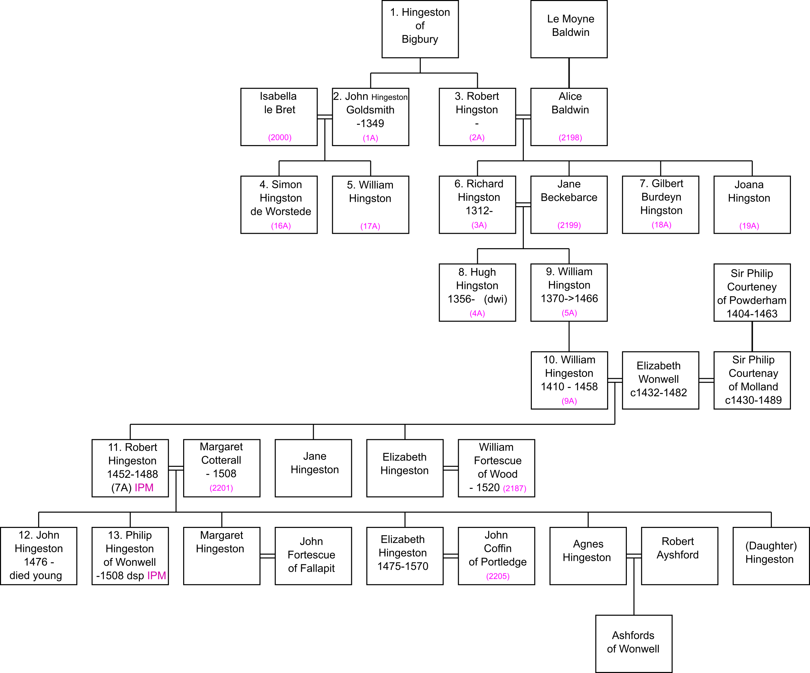
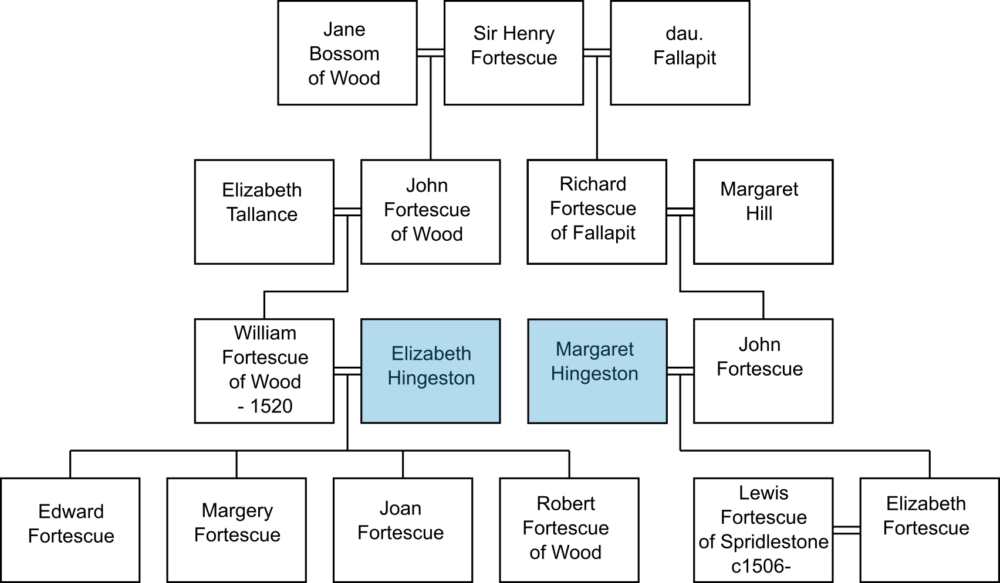

WEH did some work looking at the earliest Hingstons. Itwas probably carried out just before he died and gives the impression of being incomplete, as one might expect. He produced a seperate list that is included on this website, starting with 1A John Hingston, who was from Bigbury, but became a goldsmith in London and was an Alderman of the City from 1334-1349. It may be signifcant that 1348 was the year the Black Death came to England. WEH clearly had access to some London land records, which are now available online, and he also refers to some pedigrees and wills that I have not yet tracked down. He traced this family down to the last occupants of Hingston and Wonwell, but the later entries are inconsistent and the dates make no sense to me, so I have never put thm into a complete tree. WEH does not appear to have found the Inquisitions Post Mortem of Robert, who died in 1488, and his son Philip, who died in 1588 at Wonwell, both of which contain some information.
We also have a document produced by Brad Verity who was trying to resolve an issue in the family of Sir Philip Courtenay of Molland. He concludes that the Wonwell property was brought into the Hingston family by Elizabeth of Wonwell on her marriage to William Hingston (1410-1458) and when he died, she married subsequently Sir Philip. He also links some Hingston women who married into the Fortescue family (in East Allington), and the Coffin family at Portledge in North Devon. These are often reported, not always consistently, in various online pedigrees.
I have merged WEH's work down to his 9A William, but followed and extended Verity's families subsequently because there were fewer inconsistencies in that work. The line described here starts in about 1300, when surnames were relatively new. Before this time "John of Hingston" meant that you were John who lived at Hingston; soon afterwards, "John of Hingston, or more commonly,"John Hingston" meant that you were John of the family that used to live at Hingston. Hingston had become, in effect, a surname, and the person at the top of this list may be the person from whom all subsequent Hingstons are descended.
The trees described here place the Hingstons with some of the most important families of the county. The Courtenays included the Earls of Devon whose seat was at Powderham Castle on the River Exe. The Molland branch was a cadet branch of the family. The Historian HM#17 Francis Charles Hingeston-Randolph reported that in the visitation of 1620 (Devon) (which we should check) the Arms are given are given as; quarterly, 1 Courtenay; 2 Redvers; 3 Hingeston; 4 Courtenay. However, modern representations of the Courtenay Arms do not show the Hingston Link. The Verity article (originally written in 2011) states that "Elizabeth Wonwell Hingeston Courtenay has tens of thousands of descendants living today, at least one of whom (HRH The Duke of Cambridge) descends from each of Elizabeth's marriages." The Duke of Cambridge is a title held by Prince William; there is a 16-generation Ahnentafel of him but that may not go back far enough to show the Hingston connection.
The lines listed here, and especially the IPMs, show geographical links to most of the places where Hingstons are later found in South Devon. This reinforces the idea that properties were acquired for yunger members of these families, who are not detailed here. The Hingston line NOT covered is the line in South Milton and South Huish, which has never been studied in detail.

A. 2693. Grant by John de Hyngestone, goldsmith, and John de Totenham. chandler, citizens of London, executors of the will of Henry de la More, late citizen and goldsmith of London, to John Neirneut and Margery his wife, of the tenements that were the said Henry's in the parish of St. Nicholas Olave in Old Fish Street. Friday the morrow of All Souls' day, 3 Edward III. Two seals. [Year 1329]
A. 7816. Feoffment by Cristina late the wife of William le Bret, citizen and goldsmith of London, in her widowhood, to John Neyrneut, citizen of London, of one mark quitrent which she was accustomed yearly to receive from Walter Cady, citizen and chandler of London, for a tenement she had demised to him for the term of her life, and which came to her in dower after her said husband's decease, in the parish of St. Nicholas Olave in the old fishmarket, and which she lately held by the assignment of Henry de la More, late citizen and goldsmith of London, being situate between the tenement late the said Henry's on the east and south, Roger de Ely's tenement on the west and the highway on the north; the reversion of which tenement expectant on her decease belonged to the said John Neirneut by the grant and sale of John de Hynggestone, goldsmith, and John de Totenham, chandler, citizens of London, executors of the will of the said Henry de la More. Witnesses:—Robert de Ely being alderman of the ward &c. London, Monday after All Hallows, 3 Edward III. Endorsed: Shordich. [1329]
A. 7327. Feoffment by John Neirneut and Margery his wife to John de Hyngeston, citizen and goldsmith of London, of the tenements formerly of Henry de la More, citizen and goldsmith of London, and which the said Henry had by the feoffment of William le Bret, late citizen and goldsmith of London, in the parish of St. Nicholas Olave, in the Old Fishmarket (reteri piscaria), London; together with the reversion of a tenement there which Cristina late wife of the said William le Bret then held in dower by the assignment of the said Henry. Witnesses:—Robert de . . . ly, then alderman of that ward, and others (named). Sunday after St. Peter in Cathedra, 4 Edward III. Memorandum endorsed of enrolment in the Husting of London, Monday the vigil of St. Philip and [James] 4 Edward III. Endorsed: 'Schordich.' [1330]
A. 2654. Letters of attorney of John Neirneut, empowering Thomas Neirneut his brother to put John de Hyngeston, citizen and goldsmith of London, in possession of one marc yearly rent issuing from a tenement in the parish of St. Nicholas Olave in Old Fish Street, London. Sunday after St. Peter in Cathedra, 4 Edward III. [1330]
A. 1879. Grant by Roland Schenc, son of Martin Sench, deceased, to John de Hingeston, citizen and goldsmith of London, of the tenements with garden he had by legacy from Martin his father in Aldresgate-Strete in the parish of St. Botolph without Aldresgate, London, situate as described. Simon de Swanland, then Mayor of London, Henry Gisors, Richard le Later, sheriffs, Henry de Secheford, alderman of the ward. Tuesday after the Annunciation, 4 Edward III. Seal. [1330]
A. 2390. Grant by John Neirneut to John de Hingestone, citizen and goldsmith of London, of one marc yearly quit rent he has by gift of Cristina, late the wife of William le Bret, late citizen and goldsmith of London, issuing from a tenement in the parish of St. Nicholas Olave in Old Fish Street which Walter Cady holds by grant from Cristina for her life. Witnesses:—Simon de Swanlond, Mayor of London, and others (named). Sunday after St. Peter [ad Vincula], 4 Edward 111. Injured. [1330]
A. 7291. Letter of attorney by John Neirneut authorising Thomas Neirneut, his brother, to place John de Hyngestone, citizen and goldsmith of London, in full seisin of all the tenements formerly belonging to Henry de la More, citizen and goldsmith of London, in the parish of St. Nicholas Olave in the old fishmarket (piscaria), London, according to the deed of feoffment made to him thereof by the said John Neirneut and Margery his wife. Sunday after St. Peter in Cathedra, 4 Edward III. Injured. [1330]
A. 7844. Counterpart demise by the prior and convent of Holy Trinity, London, to Richard de Hanneye, citizen and goldsmith of London, and Joan his wife for their lives in survivorship of a tenement which John Michel and Maud late his wife used to hold of them in Goderonlane in the parish of St. John Zachary in the city of London, bounded by the tenements late Adam de Hallingburi's on the south and east, the tenement of the said prior and convent, then held by Joan late the wife of John le Gay, on the north, and Goderonlane on the west, at 16s. rent and on condition of doing repairs. Sunday before the Conversion of St. Paul, 7 Edward III. John de Hyngeston being alderman of the ward, &c. [1333]
A. 1959. Release by Ronald Schench, son of Martin Schench, deceased, to John de Hyngeston, citizen and goldsmith of London, of the tenements with garden in Aldresgatestrete in the parish of St. Botolph without Aldresgate which he had by bequest of his father and which the said John acquired of him. Witnesses:—John de Pulteneye, Mayor of London, John Hamonde and William Haunserde, sheriffs, and others (named). Saturday, the eve of Easter, 8 Edward III. Seal. [1334]
A. 1959. Release by Ronald Schench, son of Martin Schench, deceased, to John de Hyngeston, citizen and goldsmith of London, of the tenements with garden in Aldresgatestrete in the parish of St. Botolph without Aldresgate which he had by bequest of his father and which the said John acquired of him. Witnesses:—John de Pulteneye, Mayor of London, John Hamonde and William Haunserde, sheriffs, and others (named). Saturday, the eve of Easter, 8 Edward III. Seal. [1334]
A. 7847. Feoffment by John de Hyngeston, citizen and goldsmith of London, to Robert de Schordich, citizen and goldsmith of London, son of Roger le Hornere, late citizen of London, of the tenements he had by the feoffment of John Neirneut and Margery his wife in the parish of St. Nicholas Olof in the old fishmarket (veteri piscaria), London, which tenements formerly were Henry de la More's, citizen and goldsmith of London, by the gift and feoffment of William le Bret, citizen and goldsmith of London; the said tenements stretch from St. Nicholas' Church to the house formerly Adam Haryng's: Richard de Rothyngg being alderman of the ward &c. Friday the feast of the Conception, 9 Edward III. Seal. [1335]
A. 6939. Defeasance of a bond of Statute Merchant, by Robert de Schordiche, the younger, citizen and goldsmith of London, to John de Hyngeston, citizen and goldsmith of the same, for 120l. to be paid at Michaelmas next; witnessing that the said John grants that if the said Robert shall pay him 110l. at the terms specified, then the said bond shall be void. Saturday after the Conception, 9 Edward III. French. [1335] Seal.
B. 2012. Grant by Walter le Ku, son and heir of Richard le Ku of London, to William le Palmere of that city, of two tenements in the parish of Allhallows, Stanyngecherch. Witnesses:— Reginald de Conductu, mayor, John de Hingstone and Walter Turk, sheriffs, of London, Benedict de Fulsham, alderman of that ward and others. Monday after the Exaltation of the Holy Cross, 9 Edward III. Fragment of seal. [1335]
A. 6988. Defeasance of a bond of statute merchant, by Robert le Hornere, citizen and goldsmith of London, to John de Hynggeston, citizen and goldsmith of the same, for 40l. to be paid at Christmas next; witnessing that if the said Robert shall pay to the same John 30l. on Christmas day next in his hostel (hospicio) in London, then the said bond shall be void. Wednesday the vigil of the Ascension, 13 Edward III. Seal of arms. [1339]
A. 7322. General release by Thomas de Morlee, clerk, and citizen of London, to Nicholas, prior of Holy Trinity, London, and the convent of the same; also release of his right in the lands and tenements formerly of Robert de Shordich, called 'Hornere,' in London, by reason of the dower of Idonia late the wife of John de Hyngeston and then wife of him the said Thomas. Witnesses. Tuesday the morrow of the Nativity of the B.V.M. 28 Edward III. Fragment of seal. [1354]
3. ROBERT HINGESTON (2A in WEH) Hingston, Devon, resident of London, brother of 2. John, married in 1311, to ALICE BALDWIN, daughter and heiress of Le Moyne Baldwin, (WEH refers to Monk's Pedigree - we need to find this), and by her had at least three children. He must have died early, for his two youngest were not of age when their uncle died in 1349. The children of Robert and Alice included:-What is written above here comes largely from the work of WEH, but his details for the later entries, especially dates, are inconsistent. The later entries are largely derived from the work of Brad Verity. It is assumed that 9. William is the father of 10. William, listed below but the link is uncertain. There is time for another generation in between.
It is assumed that William is the father of:-
WEH has Elizabeth herself being a Hingston, but Verity makes a strong case (which I follow here) that she was a Wonwell by birth and a Hingston by marriage.
According to WEH, Elizabeth and Sir Philip had issue three sons and two daughters. Their eldest son, John, succeeded his father in his estate, married Joan, daughter of Robert Prett of Pillond in Pelton parish, and died 27 March 1509; was buried in Molland church. From him through several generations descended the Courtenay family and founders of the Prideaux family. Sir Phillip's eldest daughter, Elizabeth, was married to her cousin, Sir Edward Courtenay, in 1482, who was restored to the title of Earl of Devon in 1485. He, Sir Edward (sometimes called Sir William), was knighted on the field by the Earl of Richmond 7 August 1485; created Earl of Devon 26 October 1485; bearer of the second sword at the coronation of Henry VII, 30 October 1485; Justice of the Peace County of Somerset 20 November 1485.; a Commisioner of the Royal Mines in England and Wales 27 February 1486; Constable of Restomell Castle and Keeper of the Park 1 March 1486; Chief Commissioner to muster archers in County Connwal1 23 December 1488; Knight of the Garter July 1489; Captain in the King's army (France) September to November 1492; Commissioner in Oyer and Terminer in London and Middlesex 16 February 1494; First Commissioner to inquire into Rebellion in Cornwall and Devonshire, Somerset, Dorset, Wiltshire, Hannts., Surrey and Gloucester 28 June 1497; made Captain of the Royal army (west) September 1497; repulsed Perkin Welbeck's attack on Exeter 1497; died 1 November 1509, and is buried in Tiverton. Their son William married the Princess Catherine, sister of Elizabeth, wife of King Henry VII; was made Knight of the Bath 1487, and died 9 January 1511. His wife, Princess Catherine, died 15 November 1527. Sir Phillip of Molland, 2184, was High Sheriff of Devonshire 10 Edward IV (1471), and his family continued in a flourishing condition to the year 1732, when John Courtenay of Molland died without issue.
Robert died without obvious heirs, so an IPM was held. Hingston, Robert. 4 Hen.VII. Ser.II. Vol.4 (68) [1488] C.Inquisitio post mortem. Abstract. Writ dated at Westminster 15 Feb. 3 Hen.VII. [1487/8]. Devon. (Delivered into court 16 Oct. by John Kerton). Inquisition taken at Exeter 20 Oct. 4 Hen.VII [1488] before Henry Lea, escheator, after the death of Robert Hengeston, by the oath of Richard Pomerey knt., John Hengescote esq., Will. Wydeslade esq., Thos. Denys, esq., Will. Chudley, esq., Roger Holond esq., John Bonvile, Will. Floyer, John Holbeme, John Boudon, Henry Kelly, John Lotyn and William Page; who say that Robert Hengeston long before his death was seized of a messuage and 4 furlongs in Hengeston, with common pasture in Bogbury; a messuage and 6 furlongs in Luyston (map); ½ a furlong and 6 messuages in Newton Ferrars; a messuage and ½ a furlong in Dunston (map) in the parish of Yealmpton a messuage in Earl’s Plympton (map); a messuage and furlong in Petrystavy (map); tenement in Kingsbridge; a furlong in Langeston (map) and Brounston, and 12d. in rent in Briggelond. By charter dated 7 April 19 Edw.IV. [1479] he enfeoffed thereof Philip Courteney knt., Edward Courteney esq., Thos. Coterell esq., and Will. Fortescu esq., who are yet living thereof. Robert Hengeston was likewise of 6 messuages and 4 furlongs in Howton (map), a messuage and 3 furlongs in Noddon (map) and Holwell (map) in the parish of Bygbury and a messuage and 4 furlongs on Haukerigge. By charter dated 16 Jan. 3 Hen.VII. [1487/8] he enfeoffed thereof Thos. Coterell, Will. Fortescu and John Hengeston. The said feoffees demised a messuage and 4 furlongs on Hankerigge to Margaret who was wife of said Robert Hengeston for life; who still holds the same. Premises in Hengeston, Langeston, Howton and Noddon are held of the heirs of William Bygbury in free socage; worth by the year clear, c0s (misprint). Luyston held of Margaret countess of Richmond of her manor of Holbeton by fealty, worth &c., 20s. Newton Ferrars held of Nicholas Delune and Patrick Bedlowe of their manor of N.F., by fealty worth &c., 20s. Dunston held of Hugh Rope by fealty worth &c., 13s.4d. Plympton Earl held by the burgesses of Plympton by fealty; worth &c., 13s.4d Petrystavy held of the heirs of William Sachevyle by fealty worth &c., 6s.8d. Kingsbridge held of the abbot of Buckfast, by fealty worth &c., 3s.4d. Brounston and Briggeland held of the heirs of Will Ayssheford by fealty; worth &c., 5s. Robert Hengeston died 28 Jan. John, son and heir aged 12.
Philip died in 1508 leaving no children, with no obvious male heir so an IPM was held.
Hyndyston, Philip. 3 Hen.VIII. Vol. 26. (43). [1511]. C. Inquisitio post mortem. Abstract. Writ dated at Westminster 9 July 3 Hen.VIII. [1511], after the death of Philip Hendeyston esq.,
Devon. (Delivered into court 22 Oct. by Roger Elford). Inquisition taken at Exeter 1 Oct. [1511] before Philip Courteney escheator after the death of Philip Hyndyston, by the oath of John Prous esq., Gregory Fokerey esq., Henry Drewe, Will. Chudley, esq., Henry Ayssheton, John Sporway,John Holman, Simon Horswyll, Henry Sture, Henry Seynthill, Marton Groce, John Webber, Hugh Grenefild and John Moryshed; who say that one Robt. Hyndyston was long ago seized of a messuage and 4 furlongs in Hyndyston (map) with common od pasture in Bigbury & lands in Langeston (map), Howton (map) and Noddon (map) held of the heirs of William Bigbury in free socage of the manor of Bigbury; worth by the year clear 40s;- A messuage and 6 furlongs in Luyston (map) held of Margaret countess of “Rochemont” & Darby of her manor of Holbeton, by fealty worth &c., 20s;- ½ a furlong and 6 messuages in Newton Ferrers, held of Nicholas Delune and Patrick Bedlowde of the manor of Newton Ferrars in free socage worth &c., 20s. A messuage & ½ furlong in Dunston (map) in the parish of Yelmpton held of the heirs of Hugh Rope by fealty; worth &c. 13s.4d. A messuage in Plympton Earl (map) held of the burgesses of Plympton fealty worth &c., 3s.4d. A messuage and furlong in Petertavy (map) held of the heirs of William Sachevyle by fealty worth &c. 6s.8d. A tenement in Kingsbridge held of the abbot of Buckfast, by fealty worth &c. 3s.4d. One furlong on Longeston (map) and Brounston and 12d. rent in Bridgeland held of Nich. Aysheford by fealty; worth &c. 5s;- So seized by charter dated 7 April 19 Edw.IV [1479] the said Robert Hyndyston enfeoffed thereof Philip Courteney knt. Edward Courteney esq. Thos. Coterell esq. and William esq., Edward Courteney and William Fortescue are yet living and seized thereof.
The said Robert Hyndeston was also seized of 6 messuages and 4 furlongs in Howton (map) a messuage and 3 furlongs in Noddon (map) and Holwyll (map) in the parish of Bigbury and messuages and furlong in Hawkridge, Plympton Earl (map), Luyston (map), Petertavy (map) and 4s. rent in Holbeton and by charter dated 17 Jun 3 Hen VII. [1487/8] enfeoffed thereof Thos. Coterell, William Fortescue and John Hyndyston; who by their charter demised the premises in Hawkridge, Plympton Earl, Luyston, Petertavy and rent in Holbeton to Margaret who was wife of the said Robert Hyndyston for life. Margaret died 26 Oct. 24 Hen.VII [1508] and the premises fell to Elizabeth, Margaret, Joan and Agnes daughters and heirs of said Robert.
The said Robert Hyndyston was also seised of a messuage and 20 acres in Dipford (map) held of the Lady Mary Hastings in free socage of her manor of Dipford; worth by the year, clear, 20s; 1 acre in Rattrew (map) held of the abbot of St. Dogmael in “Kommays” (Pembroke), by fealty of his manor of Rattrew; worth &c., 6d. A furlong in Over and Nether Doursleigh (map) and 8 acres in Wyndysland held of Richard Courtney, Earl of Devon of his manor of Baylyford, by fealty worth &c., 2’s. (Misprint for 20s.?). And a furlong in Aysshergge (map) held of Margaret countess of Richmond and Derby in free socage of her manor of Dartington; worth &c., 20s. By charter dated Wednesday after Palm Sunday 19 Edw.IV. [Wednesday 7 April 1479] he granted the same to John Hyndyston his younger brother and Elizabeth late wife of John Bury of Colaton and the heirs of John H. They are both dead and John died without issue therefore the premises fell to Philip son of said Robert who died seized thereof.
The said Philip Hyndyston was also seized of a messuage and 100 acres and 3 tenements and 40 acres in Wonewyll (map), held of John Lord Fitzwarren in free socage; of his manor of Kingston; worth by the year clear £10. A messuage and 20 acres in Mouthcomb (map) held of the abbot of Buckfast by fealty; worth &c. 26s. 8d. A tenement and garden in Great Totnes held of Peter Edgecomb, knt., in free socage, worth &c., 6s.8d. A tenement and 8 acres in Denbury (map) held of the abbot of Tavistock in free socage, worth &c., 20d. And the moiety of a messuage and 40 acres in Long Huish, held of the prior of Plympton by fealty; worth &c., 5s. Philip Hyndyston died 17 Oct. 24 Hen.VII. [1508] Eliz. Margaret, Joan and Agnes sisters and heirs all over 26.
There is a problem associated with the two Elizabeth Hingstons, one of whom was the daughter of 10. William Hingston and his wife Elizabeth Wonwell; she would probably have been born in the 1450s. The other was the daughter of 11. Robert Hingeston and Margaret Cotterall and would probably have been born after the early 1470s. They would have been aunt and niece.
One of the Elizabeths married William Fortescue of Wood, which is near Kingsbridge, while the other married John Coffin of Portledge, which is in North Devon. The question is which Elizabeth in each case. Verity has the younger Elizabeth marrying John Coffin, and does not have a marriage for the elder Elizabeth, but he does show a marriage for Margaret Hingeston to John Fortescue of Fallapit (a cousin of William Fortescue of Wood). WEH has Elizabeth Hingston, born 1465 at Wonwell, and married William Fortescue, Gentlemen of Wood, who died 22 July 1520 (Inquisition Post Mortem 13 Henry VIII) A. D. 1522.
In Burke's "A genealogical and heraldic History of the Commoners of Great Britain and Ireland, Volume 2 (1885). JOHN FORTESCUE was the son of Sir Henry Fortescue, chief justice of the court of common pleas in Ireland, 1426 and his first wife Joan. John married MARGARET, daughter and heir of WILLIAM HINGSTON, of Wonnel, and left an only daughter and heiress, Elizabeth Fortescue, of Fallapit, who married a cousin Lewis Fortescue, one of the barons of the exchequer. This would lift Margaret up a generation from where she is shown at present
There is the possibility that the two Elizabeths are the wrong way round, but without firmer dates it is difficult to be certain.
It is possible there is also a link between a Hingston man and a woman from East Allington, because the Hingston name was present in East Allington by the 1560s.

Return to Hingston One-Name Study
Page added 13th October 2023. Chris Burgoyne